Prueba en Dorotea — Ajustes de arquitectura y código
Objetivo. Salir del entorno local y validar el stack en un servidor remoto de altas prestaciones (Dorotea) sin exponer puertos públicos; mantener acceso seguro vía SSH y dejar todo listo para pruebas de carga y funcionales.
Requisitos Previos: Drivers de NVIDIA Instalados en Rocky Linux
El servidor debe tener los drivers propietarios de NVIDIA funcionando correctamente. Para verificarlo, ejecuta este comando:
nvidia-smi
Si ves una tabla con los detalles de tu GPU, estás listo. Si te da un error, necesitas instalar los drivers primero.
Docker Instalado
Debes tener una instalación funcional de Docker. Puedes verificarlo con:
docker --version
Paso 1: Configurar los Repositorios de NVIDIA
Rocky Linux no sabe dónde encontrar el toolkit por defecto. Primero, debemos agregar los repositorios oficiales de NVIDIA a nuestro sistema.
sudo dnf config-manager --add-repo https://nvidia.github.io/libnvidia-container/stable/rpm/nvidia-container-toolkit.repo
Paso 2: Instalar el NVIDIA Container Toolkit
Ahora que el sistema conoce el repositorio, puedes instalar el paquete usando dnf.
sudo dnf install -y nvidia-container-toolkit
Paso 3: Configurar Docker para que Use el Toolkit
Una vez instalado, tienes que decirle a Docker que lo utilice como un "runtime" para GPUs. El toolkit incluye una herramienta para hacer esto automáticamente.
sudo nvidia-ctk runtime configure --runtime=docker
Después de configurar, es crucial reiniciar el servicio de Docker para que aplique los cambios.
sudo systemctl restart docker
Paso 4: Verificar la Instalación ✅
La mejor forma de confirmar que todo funciona es ejecutar un contenedor de prueba que intente acceder a la GPU. El siguiente comando es el estándar para esta prueba:
docker run --rm --gpus all nvidia/cuda:12.0.0-base-ubuntu22.04 nvidia-smi
Resumen de la evolución de la arquitectura
Opción 1: NGINX → 4 servicios (ideal)
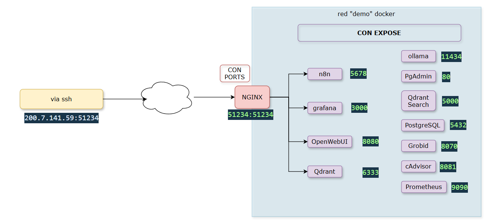
Un solo puerto expuesto por NGINX y, detrás, 4 servicios accesibles por subpath:
- `/` → n8n
- `/grafana/` → Grafana
- `/webui/` → OpenWebUI
- `/qdrant/` → Qdrant
Ventaja: 1 túnel SSH, una única puerta de entrada y URLs limpias.
-
Problemas encontrados
-
WebSockets/SSE de n8n: el proxy requería
proxy_http_version 1.1, headersUpgrade/Connectiony timeouts altos. Sin eso, fallaban eventos del editor y la UI mostraba “Could not connect to server”. -
Subpath:
- Grafana requiere
GF_SERVER_ROOT_URLapuntando al subpath yGF_SERVER_SERVE_FROM_SUB_PATH=true. Aun con eso, aparecieron 301/redirects a/grafanay recursos estáticos fuera del path. - OpenWebUI sirve assets en rutas absolutas; al forzarlo bajo
/webui/faltaban archivos (/static/splash.png404) y la UI quedaba en blanco salvo el loader.
- Grafana requiere
Opción 2: solamente NGINX -> N8N (transición)
- 1 puerto → NGINX → solo n8n en
/.
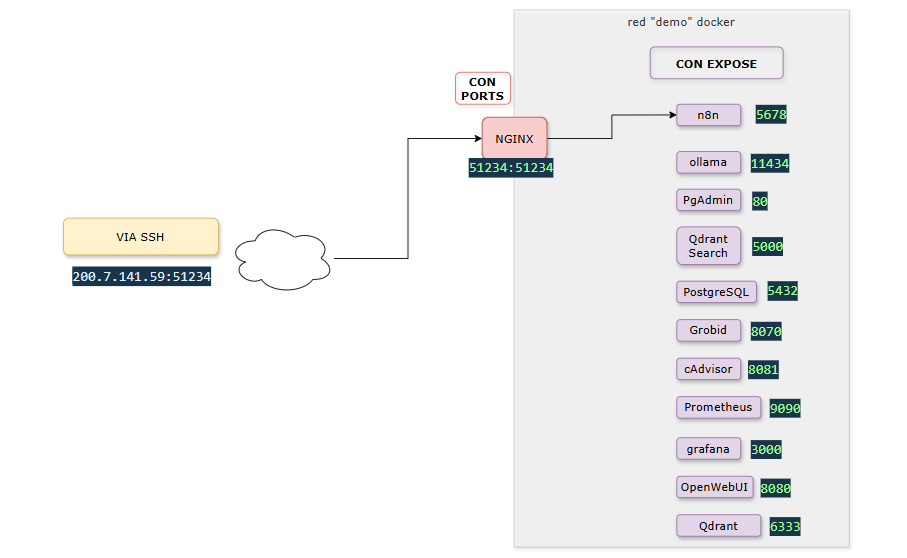
Opción 3: 4 puertos vía SSH (implementada)
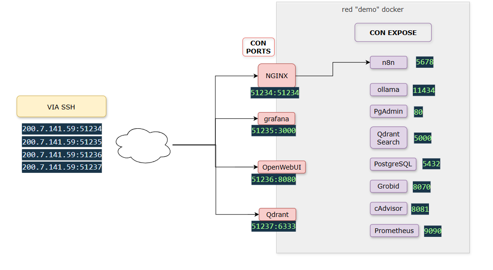
Se abren túneles locales (sin puertos públicos):
ssh -i ~/.ssh/dorotea-kevin -L 51234:localhost:51234 daninziata@200.7.141.59
ssh -i ~/.ssh/dorotea-kevin -L 51235:localhost:51235 daninziata@200.7.141.59
ssh -i ~/.ssh/dorotea-kevin -L 51236:localhost:51236 daninziata@200.7.141.59
ssh -i ~/.ssh/dorotea-kevin -L 51237:localhost:51237 daninziata@200.7.141.59
Con esto:
http://localhost:51234→ n8n (pasa por NGINX)http://localhost:51235→ Grafanahttp://localhost:51236→ OpenWebUIhttp://localhost:51237/dashboard#/collections→ Qdrant (dashboard)
Principales diferencias ANTES vs DESPUÉS
Ajustes de NGINX para utilizar n8n en la raíz (/)
El proxy quedó ajustado para WebSockets/SSE y conexiones largas:
proxy_http_version 1.1Upgrade/Connection "upgrade"- timeouts altos (
proxy_read_timeout,proxy_send_timeout) proxy_buffering offpara server-sent events (SSE)
Con estos ajustes, el editor de n8n dejó de mostrar errores de conexión y pudo autenticarse y trabajar con normalidad detrás del proxy.
Cambio de almacenamiento (limitación de /var)
Contexto. El servidor tiene:
/dev/mapper/vg_server-lv_root 79G 49G 30G 62% /
/dev/nvme1n1p1 7T 398G 6.2T 6% /home
El runtime de Docker por defecto escribe en /var/lib/docker (dentro de /), lo que rápidamente agotaba espacio, especialmente al descargar modelos de Ollama y datos persistentes.
Acción. Se reemplazaron volúmenes nombrados por bind mounts hacia /home:
- Postgres →
/home/daninziata/docker_data/postgres - Grafana →
/home/daninziata/docker_data/grafana - OpenWebUI →
/home/daninziata/docker_data/openwebui - Qdrant →
/home/daninziata/docker_data/qdrant - Prometheus →
/home/daninziata/docker_data/prometheus - Ollama (modelos) →
/home/daninziata/ollama_data
Resultado. Todo lo pesado sale de /var y pasa al disco grande de 7 TB, eliminando errores por falta de espacio.
Networking
Antes: muchos servicios con ports: publicados hacia el host.
Después:
- n8n permanece detrás de NGINX (publicado en
51234). - Grafana, OpenWebUI y Qdrant se publican en puertos altos (51235/51236/51237) sólo para túneles SSH.
- Servicios internos (Postgres, Prometheus, cAdvisor, etc.) usan
exposedentro de la reddemoy no se publican al host.
Persistencia
- Antes: volúmenes nombrados (
grafana_data,prometheus_data, etc.). - Después: bind mounts a rutas en
/home/daninziata/...para cada servicio, y/home/daninziata/ollama_datapara los modelos.
Nombres/hosts
- Antes: contenedores cortos (
ollama,qdrant). - Después: sufijo
-kpara distinguir el despliegue remoto (ej.ollama-k,qdrant-k,nginx-proxy-k, etc.). Las apps que dependen por URL se actualizaron (ej.OLLAMA_HOST=ollama-k:11434).
Monitoreo: cAdvisor + Prometheus
- Síntoma inicial en Prometheus:
connect: connection refusedal intentar scrapearcadvisor-k:8081/metrics.
Causa: El contenedor cAdvisor escucha en 8080, pero el job de Prometheus apuntaba a 8081.
Arreglo aplicado:
- En Compose:
cadvisorconexpose: "8080". - En Prometheus: job
cadvisor→targets: ['cadvisor-k:8080'].
Servicio qdrant-search (Flask + Qdrant Client + Ollama)
Parámetros por variables de entorno (en Compose):
OLLAMA_URL=http://ollama-k:11434QDRANT_URL=http://qdrant-k:6333COLLECTION_NAME=TEST_DOROTEA
Importante: Si se cambia el nombre de colección, hay que reconstruir la imagen para propagar variables al contenedor:
docker compose build --no-cache qdrant-search docker compose up -d qdrant-search docker exec -it qdrant-search-k sh cat /app/client_qdrant_flask_docker.py | grep collection_name
El microservicio devolvía Not found: Collection 'prueba_CRAG3' doesn’t exist! aun cuando COLLECTION_NAME=TEST_DOROTEA. Causa: el contenedor estaba corriendo con capa antigua (variables de una build previa). Solución: rebuild del servicio. Tras eso, las consultas desde n8n y desde la red Docker funcionaron.
GPU y modelos (Ollama)
- Verificación de uso de GPU con
nvidia-smi: durante generación se observóGPU-Util 100%en la A30 y consumo de VRAM acorde a los modelos cargados. Sin embargo, solo en una de las 2 placas. también se observó que
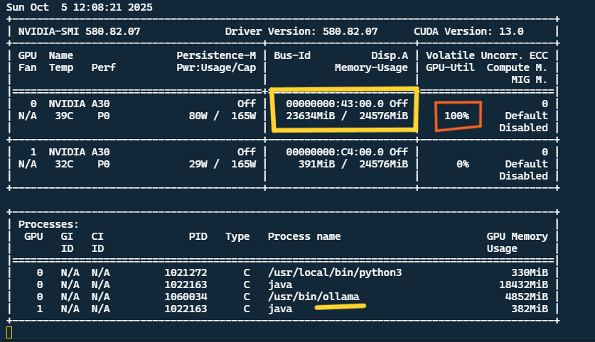
Logs de Ollama mostraron loaded CUDA backend, “VRAM available/required” y selección de GPULayers, confirmando aceleración CUDA.
Mensaje “truncating input prompt (limit=4096)”: es el límite de contexto del modelo en tokens. Si el prompt (incluida la conversación previa) lo supera, Ollama lo recorta. Mitigación: prompts más breves o modelos con mayor contexto (cuando estén disponibles).
Resultados de las pruebas funcionales en Dorotea
Objetivo: Validar el funcionamiento integral del stack con aceleración GPU, recolección de métricas en Grafana y generación de embeddings mediante Ollama y Qdrant, utilizando la colección
TEST_DOROTEAcomo caso de prueba.
1. Pruebas de carga — Uso extremo de CPU (Profile CPU)
Durante la primera etapa de las pruebas se intentó ejecutar un perfil intensivo del modelo (Profile CPU), pero el proceso saturó completamente los núcleos de la máquina, llevando el uso de CPU al 100% en todos los hilos.
El proceso fue ejecutado desde Ollama (/usr/bin/ollama runner) con múltiples hilos en paralelo, observándose que cada uno ejecutaba la carga de modelo en puertos independientes (--port 33137).
Este test quedó en ejecución continua sin completar, por lo que se detuvo manualmente para evitar degradar el rendimiento del resto de los contenedores.
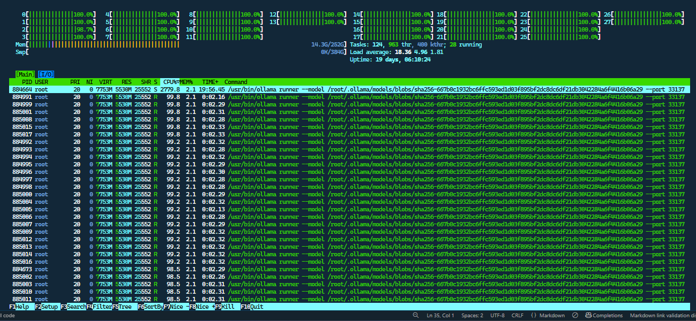
2. Monitoreo con Grafana y cAdvisor
Durante la ejecución se dejó Grafana activo con los dashboards de Prometheus y cAdvisor recolectando métricas en tiempo real de todos los contenedores.
El monitoreo permitió observar:
- Número de contenedores activos: 13
- Procesos más demandantes de CPU:
grobid-k(36.6%)cadvisor-k(10.9%)pgadmin-k,n8n-k,prometheus-ken menor proporción- Consumo de memoria: promedio general bajo, sin indicios de swapping ni saturación.
Estos datos validan que el entorno completo puede ejecutarse de manera estable durante largos periodos, incluso con procesos intensivos como el parsing de papers o la generación de embeddings.
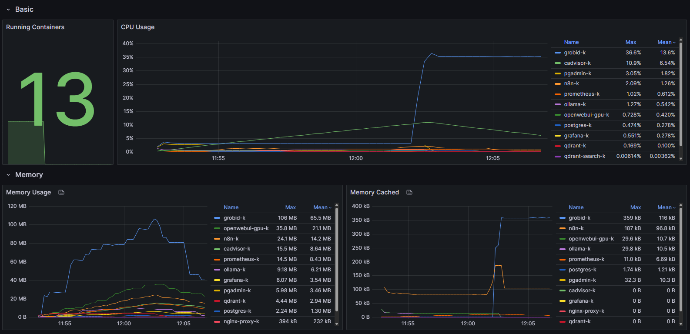
3. Carga de datos — Creación de la colección TEST_DOROTEA
Tras estabilizar el entorno, se procedió a realizar una carga de 10 papers científicos en formato JSON procesados por el pipeline Grobid → Ollama → Qdrant.
Duración total del proceso: aproximadamente 2 horas.
Esto sugiere que el cuello de botella podría encontrarse en:
- Procesamiento de embeddings dentro de Ollama (
nomic-embed-text). - Paralelización limitada o falta de optimización en la inserción de datos en Qdrant.
Se recomienda analizar en profundidad la arquitectura de Ollama (modelos, batch size, número de workers) para reducir los tiempos de carga en pruebas futuras.
Resultado:
La colección TEST_DOROTEA se creó correctamente, con estado green y 554 puntos vectoriales distribuidos en 8 segmentos.
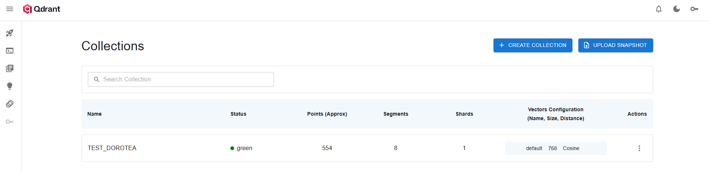
4. Visualización de la colección en Qdrant
La exploración de la colección en la interfaz de Qdrant mostró una distribución coherente de los embeddings en el espacio vectorial, confirmando que los puntos fueron generados correctamente y los metadatos (contenido, fuente, etc.) se mantienen accesibles.
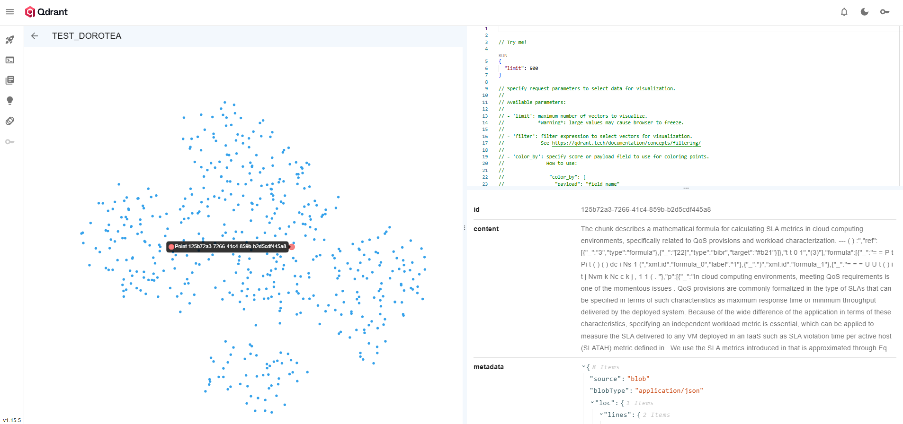
5. Pruebas de búsqueda semántica
Una vez creada la colección, se probaron distintas consultas al agente a través de qdrant-search-k, verificando que las respuestas generadas correspondían a la semántica de las preguntas y retornaban papers relevantes.
🔹 Consulta 1
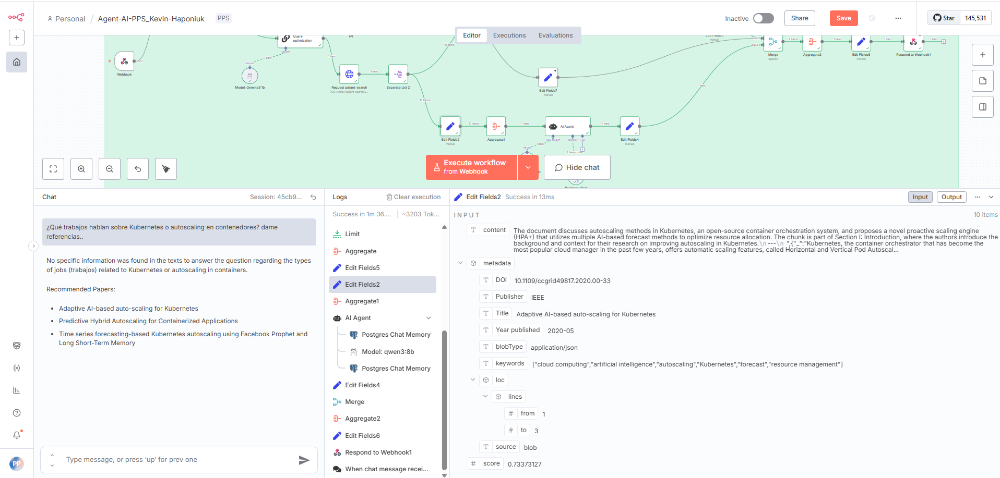
Pregunta: ¿Qué trabajos hablan sobre Kubernetes o autoscaling en contenedores?
Respuesta del agente:
No specific information was found in the texts to answer the question regarding the types of jobs (trabajos) related to Kubernetes or autoscaling in containers.
Recommended Papers:
- Adaptive AI-based auto-scaling for Kubernetes
- Predictive Hybrid Autoscaling for Containerized Applications
- Time series forecasting-based Kubernetes autoscaling using Facebook Prophet and Long Short-Term Memory
🔹 Consulta 2
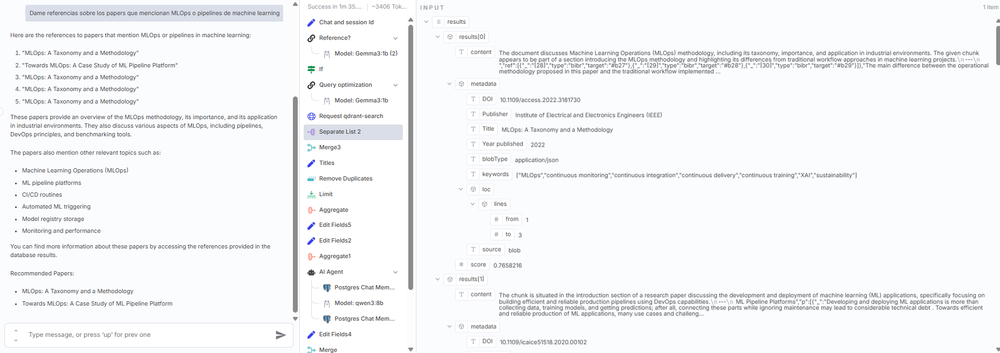
Pregunta: Dame referencias sobre los papers que mencionan MLOps o pipelines de machine learning.
Respuesta del agente:
Here are the references to papers that mention MLOps or pipelines in machine learning:
- "MLOps: A Taxonomy and a Methodology"
- "Towards MLOps: A Case Study of ML Pipeline Platform"
- "MLOps: A Taxonomy and a Methodology"
- "MLOps: A Taxonomy and a Methodology"
- "MLOps: A Taxonomy and a Methodology"
These papers provide an overview of the MLOps methodology, its importance, and its application in industrial environments. They also discuss various aspects of MLOps, including pipelines, DevOps principles, and benchmarking tools.
The papers also mention other relevant topics such as:
- Machine Learning Operations (MLOps)
- ML pipeline platforms
- CI/CD routines
- Automated ML triggering
- Model registry storage
- Monitoring and performance
You can find more information about these papers by accessing the references provided in the database results.
Recommended Papers:
- MLOps: A Taxonomy and a Methodology
- Towards MLOps: A Case Study of ML Pipeline Platform
🔹 Consulta 3
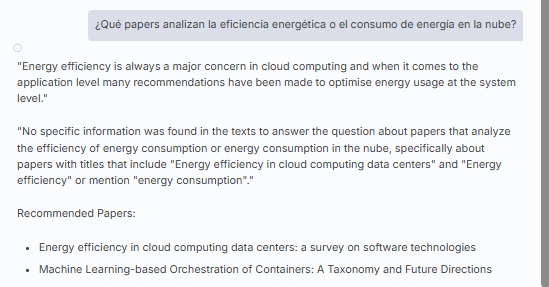
Pregunta: ¿Qué papers analizan la eficiencia energética o el consumo de energía en la nube?
Respuesta del agente:
"Energy efficiency is always a major concern in cloud computing and when it comes to the application level many recommendations have been made to optimise energy usage at the system level."
"No specific information was found in the texts to answer the question about papers that analyze the efficiency of energy consumption or energy consumption in the nube, specifically about papers with titles that include "Energy efficiency in cloud computing data centers" and "Energy efficiency" or mention "energy consumption"."
Recommended Papers:
- Energy efficiency in cloud computing data centers: a survey on software technologies
- Machine Learning-based Orchestration of Containers: A Taxonomy and Future Directions
🔹 Consulta 4
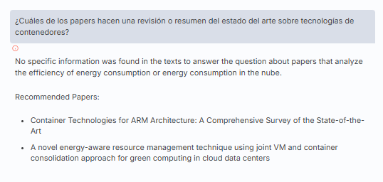
Pregunta: ¿Cuáles de los papers hacen una revisión o resumen del estado del arte sobre tecnologías de contenedores?
Respuesta del agente:
No specific information was found in the texts to answer the question about papers that analyze the efficiency of energy consumption or energy consumption in the nube.
Recommended Papers:
- Container Technologies for ARM Architecture: A Comprehensive Survey of the State-of-the-Art
- A novel energy-aware resource management technique using joint VM and container consolidation approach for green computing in cloud data centers
🔹 Consulta 5
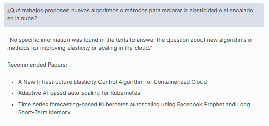
Pregunta: ¿Qué trabajos proponen nuevos algoritmos o métodos para mejorar la elasticidad o el escalado en la nube?
Respuesta del agente:
"No specific information was found in the texts to answer the question about new algorithms or methods for improving elasticity or scaling in the cloud."
Recommended Papers:
- A New Infrastructure Elasticity Control Algorithm for Containerized Cloud
- Adaptive AI-based auto-scaling for Kubernetes
- Time series forecasting-based Kubernetes autoscaling using Facebook Prophet and Long Short-Term Memory
Test usando OpenwebUI + Preguntas en inglés
Una vez dentro de OpenwebUI, el primer paso es configurar el Pipe que se utilizará. Para ello, sigue los pasos explicados en el archivo 01_implementacion-final.md. La única diferencia en este caso fue el código empleado para configurar el Pipe, que se encuentra en [DOCUMENTACION/pps-kevin_haponiuk-2025/src/self-hosted-ai-starter-kit/n8n-pipeline-function-dorotea.py].
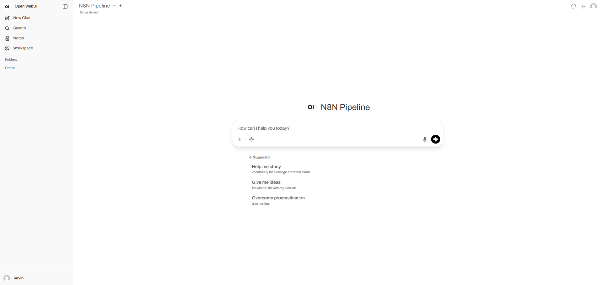
Las preguntas realizadas fueron las mismas que en pruebas anteriores, pero esta vez en inglés.
Which papers discuss Kubernetes or autoscaling in containers?
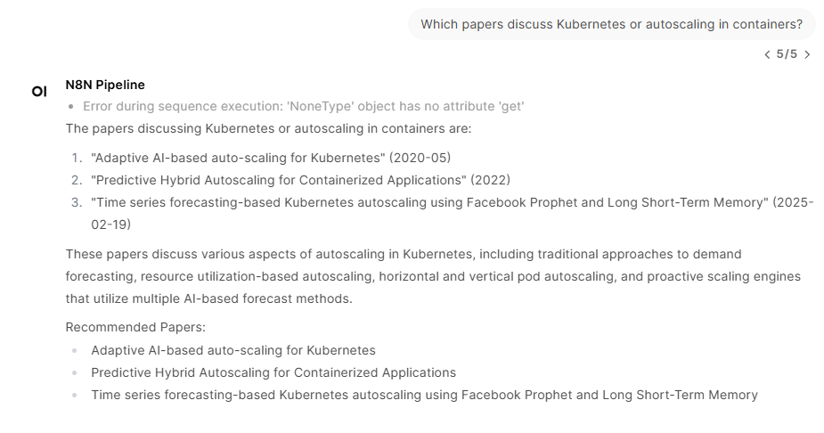
Provide references to papers that mention MLOps or machine learning pipelines.
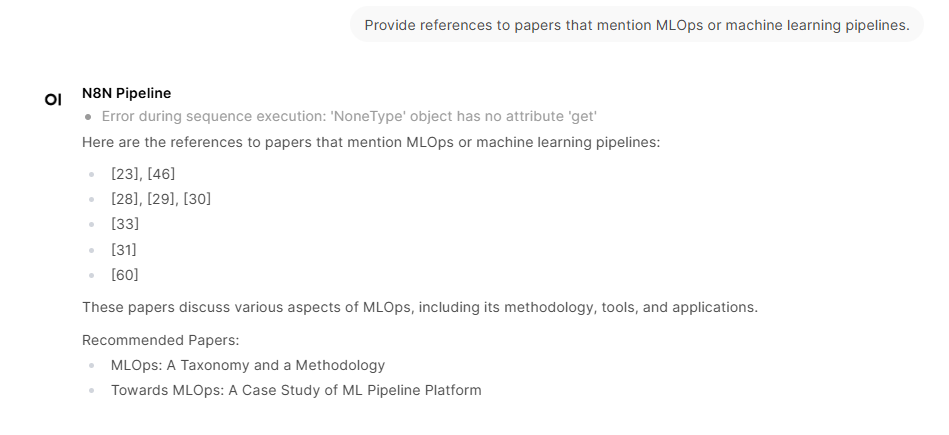
En este caso, se realizó la misma pregunta por segunda vez, ya que la primera respuesta fue algo imprecisa. Esto permitió observar cómo se comporta el sistema al repetir una consulta.
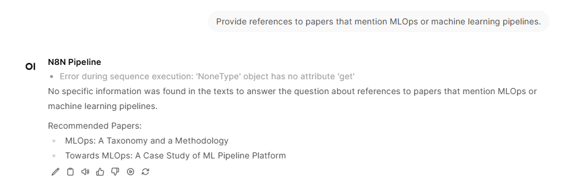
Which papers analyze energy efficiency or energy consumption in the cloud?
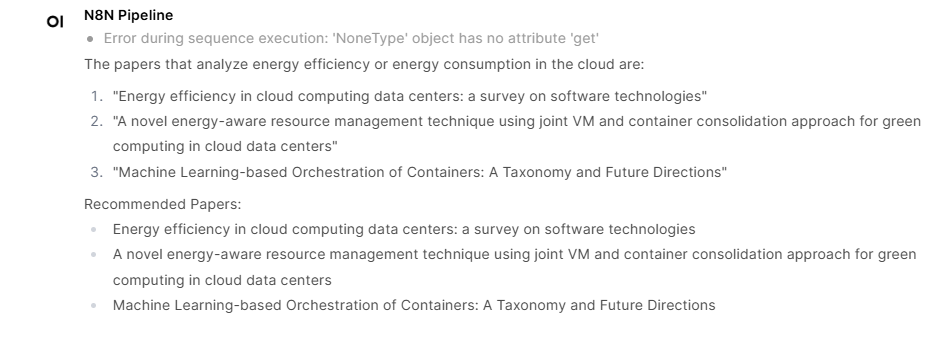
Which papers provide a review or state-of-the-art summary on container technologies?
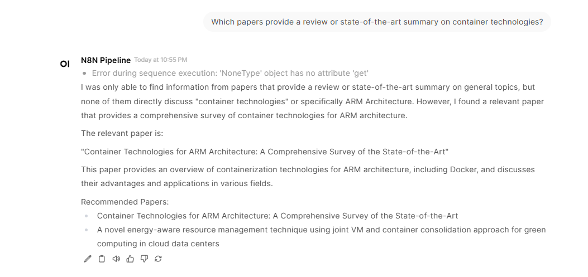
Which papers propose new algorithms or methods to improve elasticity or scaling in the cloud?
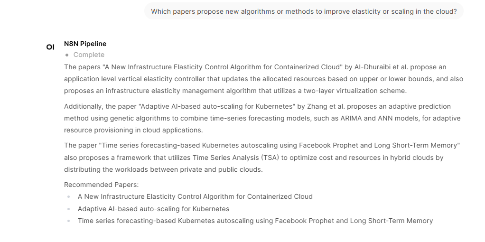
Es importante destacar que las respuestas del agente mejoraron significativamente al realizar las preguntas en inglés. Esto se debe a que el modelo de Ollama está entrenado principalmente en inglés, lo que optimiza la calidad y precisión de las respuestas.
Conclusiones
-
El pipeline completo operó de manera estable, abarcando desde la extracción y análisis de los papers hasta la indexación vectorial y la consulta semántica.
-
El rendimiento general fue satisfactorio, aunque la carga inicial de datos resultó lenta (≈2 horas para 10 documentos), indicando posibles cuellos de botella en el procesamiento de embeddings o la inserción en Qdrant.
-
Las respuestas del agente fueron semánticamente relevantes, con sugerencias precisas y papers correctamente asociados, validando el correcto funcionamiento de los embeddings y la búsqueda vectorial en Qdrant. Además, se observó que el agente mejora significativamente sus respuestas cuando las preguntas se formulan en inglés, debido a que el modelo de Ollama está entrenado principalmente en este idioma. Esto optimiza la calidad y precisión de las respuestas, haciendo que las consultas sean más efectivas.
-
Se recomienda explorar optimizaciones en:
- Uso de GPU en Ollama: mejorar la paralelización durante la generación de embeddings.
- Segmentación del proceso de carga: dividir tareas para reducir tiempos.
- Modelos alternativos: evaluar arquitecturas más eficientes para embeddings masivos.
La infraestructura desplegada en Dorotea demostró ser robusta, con capacidad de procesamiento adecuada y un rendimiento aceptable para pruebas de investigación y desarrollo, así como para futuras escalas.
Trabajo futuro
-
Migrar a la Opción 1: Consolidar los servicios detrás de un único puerto y 4 subpaths en NGINX para simplificar el acceso y mejorar la organización.
-
Fortalecer la seguridad:
- Implementar autenticación en NGINX o integrar un sistema de inicio de sesión único (SSO).
- Configurar TLS end-to-end si se planea exponer los servicios más allá del túnel SSH (actualmente suficiente para pruebas internas).
-
Optimizar el pipeline:
- Analizar el uso de GPU en Ollama para maximizar la eficiencia.
- Evaluar herramientas o técnicas para acelerar la carga de datos en Qdrant.
- Considerar modelos con mayor capacidad de contexto para mejorar las respuestas semánticas.
-
Monitoreo avanzado:
- Ampliar los dashboards en Grafana para incluir métricas específicas de GPU y rendimiento de embeddings.
- Automatizar alertas para detectar posibles cuellos de botella o fallos en tiempo real.